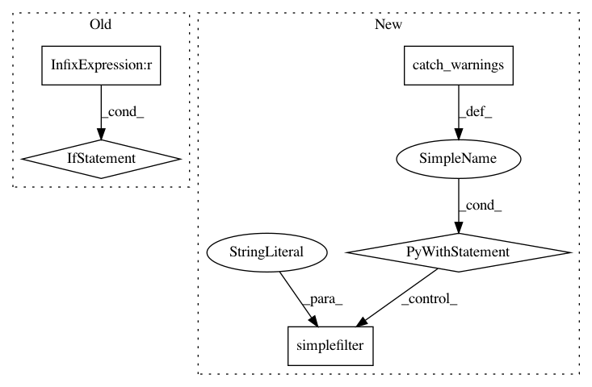

00a843e210177ee92075bb1a80da26f121285ec0,integration_test/script_test/run_matplotlib.py,,,#,43
Before Change
plt.savefig(file_name)
os.remove(file_name)
if __name__ == "__main__":
matplotlib_sample = MatplotlibSample()
matplotlib_sample.invoke(sys.argv)
After Change
// Suppress "Matplotlib is building the font cache using fc-list. This
// may take a moment" warnings.
// From https://github.com/matplotlib/matplotlib/issues/5836//issuecomment-179592427
with warnings.catch_warnings():
warnings.simplefilter("ignore")
import matplotlib.pyplot as plt
from integration_test.script_test.base import Base
class MatplotlibSample(Base):
In pattern: SUPERPATTERN
Frequency: 3
Non-data size: 5
Instances
Project Name: recipy/recipy
Commit Name: 00a843e210177ee92075bb1a80da26f121285ec0
Time: 2016-10-24
Author: michaelj@epcc.ed.ac.uk
File Name: integration_test/script_test/run_matplotlib.py
Class Name:
Method Name:
Project Name: chartbeat-labs/textacy
Commit Name: 42ea974ff63853a84b1ea98c80a2d771230f2e78
Time: 2016-05-05
Author: burton@chartbeat.com
File Name: textacy/data.py
Class Name:
Method Name: load_spacy_pipeline
Project Name: dmlc/gluon-cv
Commit Name: 2318052dc79966bf36675606b7d992a347418292
Time: 2019-01-07
Author: cheungchih@gmail.com
File Name: scripts/detection/ssd/train_ssd.py
Class Name:
Method Name: